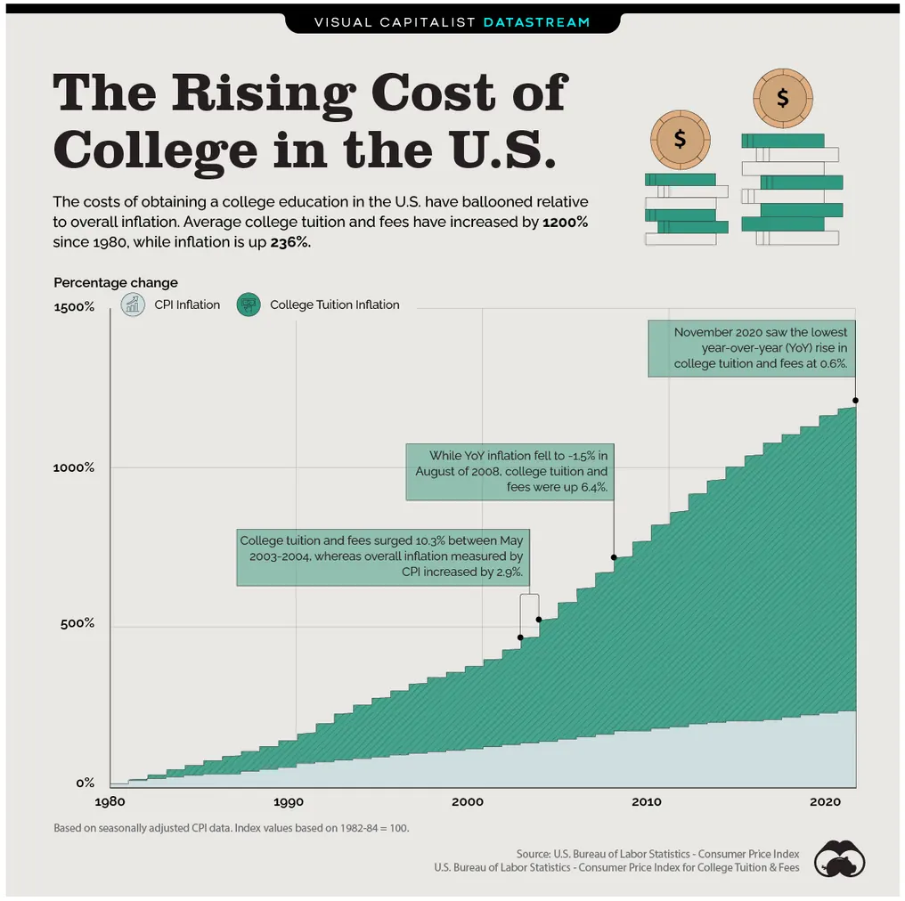
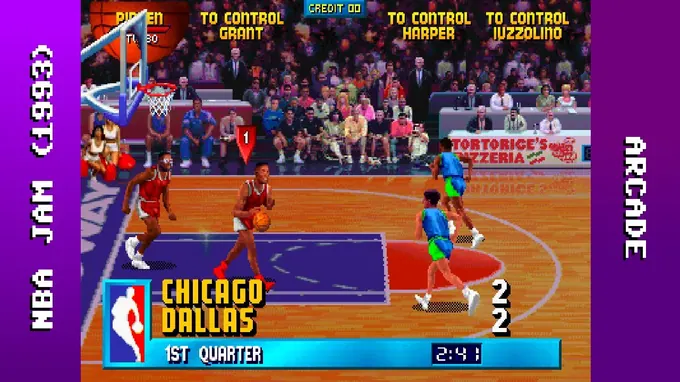
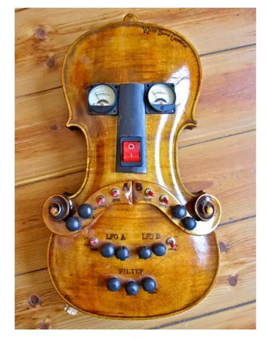
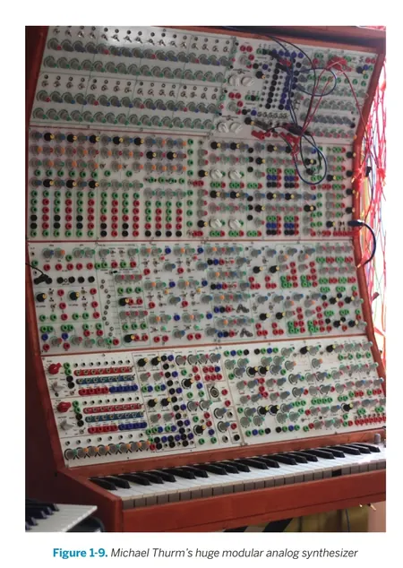
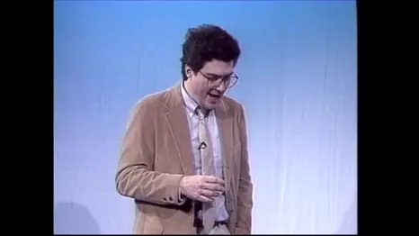

GUERILLA TACTICS
- Resources to clandestinely sidestep the system -
The Libraries Are Burning!
One of the first things I learned as a youngin was that “the greatest discovery by mankind was fire.” It provided light, protection, warmth, gastronomy – all qualities that are fundamental needs for people. While the discovery of fire was revolutionary, I believe that there is one other creation that deserves just as much praise: the public library! In principle, libraries allow for any person to access a plethora of books and resources without having to trade a limb - seems pretty valuable to me. Now, I probably only read 3 books during high school, but there is one book that I randomly picked out from my school's library that shattered some mental facades. This was the Autobiography of Malcolm X written by Alex Haley. One aspect of his extraordinary life that stood out to me was that Malcolm X didn't attend university and educated himself while he was imprisoned; this was a man who came into prison being illiterate and then walked away as a learned man. He would proceed to become one of the most powerful and liberating people of the 20th century. The change of course in Malcolm X’s life through education testified to its necessity and the power it can provide. While the government or your oppressor can take away your house and loved ones, knowledge is harder to steal. Just like schools, the library is an indispensable means for education that can nourish the roots for liberation.
Despite this, education - like the U.S government - has become increasingly dilapidated to serve the interests of a privileged few rather than serving all of its people. That is, education has only become more exclusive to those who are able to afford it. And for those that are able to afford it, it is merely an investment into one’s future prospects; it is a means for an end, the search for knowledge is not prioritized but rather it is the certificate or degree that is the desire. For those that do not have the privilege of dishing out thousands or hundreds of thousands of dollars for an education become burdened by student loans. It is through this debt and gross investment, that students are further pushed to receive degrees with the most lucrative merit and stability; medicine, engineering, computer science, business, etc. while neglecting the humanities and the arts.
As a philosophy major, which is a rare sight, this is rather disheartening. Ultimately, the capitalist system encourages the prioritization of individual interests over societal interests which is aiding in the rampant devastation of our planet. One can easily see this in the corrupt and unequal country that is the United States of America.
However, with the turn of the digital age, knowledge is becoming even more accessible as a vast majority of first world citizens can access an extensive digital library from their pockets. One of these resources that is ever so crucial to this digital library is the Internet Archive. Founded in 1996, the Internet Archive has worked to preserve the internet without letting it burn into the abyss like the Library of Alexandria; it was created under the heat of disappearing web pages (77 days was the cited lifespan of a web page according to the IA. In 2001, the Internet Archive founded the Wayback Machine which as of November, 2023 has preserved more than 863 billion web pages). You can literally play NBA Jam on that shit.
At this point you may be wondering what is the legality of the Internet Archive? Well, the IA works on the same principle that libraries do except converting their books and resources to digital copies. This is known as “controlled digital lending”. The IA works by digitizing physical copies of materials and then lends out the same number of copies that is held inside their library, but instead in digital form. For example, if the IA has fourteen copies of Plato’s Republic, they are able to digitally lend fourteen scanned copies at once. It's basically just borrowing a book from a library but digitally. So instead of having to drag yourself out of bed into the dusty stacks of your local library you can just borrow a copy digitally from the IA without the hassle.
Despite this effort of preserving the internet and the IA’s resources to digitally lend books and other resources, the archive has recently come under fire by major publishing houses in the U.S. These publishing houses include the likes of Penguin, Harper Collins, Random House, and more. It was just in March that the Internet Archive had appealed for a settlement and they are no longer able to lend copyrighted books apparently *going to finish this later*. For those that are further interested, Stephen Prager from the Current Affairs has thoroughly dissected the legality of the IA and the brooding avarice of these publishing houses. But ultimately, the IA provides such a valuable resource to society as it provides nearly universal access to books and other materials at no cost. This is a paragon for public service. Considering the current state of literacy in the US, society is in a dire need for services like the IA. Through reading ebooks, it has been noted to increase literacy levels and lead to its users to actually purchase physical copies (pew research, discovery effect).
Now imagine a society where you had to pay for every book you wanted to read or you were routinely charged a subscription fee to borrow a book. Collective ownership is at the heart of any democracy and to lose a library is a devastation to society; they should be accessible to every community at no additional cost. If not, how can we ever expect to better society as a whole?
The library is a vital artery of society where the essence of life is stored and circulated: poetry, literature, science, etc. For libraries to be severed from societies is to kill its’ heart. So here we are fighting for education, fighting for liberation. I envision this page to work as a long-standing resource for people to learn at no cost. Power to the people!

“Be extremely subtle even to the point of form Be
less extremely
ness. mysterious even to the point of soundlessness. Thereby you can be the director of the opponent's fate.”
孫子

Écrasez l’infâme (Nov, 2023)
Pirate Bay
We all know this one but it has to be listed. Want to keep watching the new Star Wars but don't want to support Disney in contribution to Israel's genocidal practices‽ From adobe products, to the most iconoclastic or eye-gouging films from the criterion collection that even your local indie has trouble showing, 乾杯 to one of the greatest websites of all time‽
prerequisites - uTorrent or other torrent downloading extension
Step 1: Search for your desired file or software. Sometimes it helps to add the year or artist name to get the right results.
Step 2: After you've found your pick, look over the amount of seeds and user status. With torrents, they are not stored from a central server but are instead provided by other pirates. The more pirates the faster the information will spread to your ship. Aarrrrrgh.
Step 3: Next you're gonna want to check if your source is labeled with the green or purple skulls (VIP & trusted). Ideally, it is safer and recommended to download from these users. A bonus is if a torrent has comments; they usually let you know if a torrent works or if the quality is shit.
Zashi Magazine is not responsible for any malware that you install by accident.
Tails
Julian Assange's best-friend or also eloquently named as the "The Amnesic Incognito Live System", Tails is a self-destructive operating system that can be booted from a USB stick, DVD, or SD card. It has no memory and automatically terminates when the operating system is ejected. Simply install Tails onto your memory device of choice, plug into your computer and boot from this device instead of your usual operating system (how to select booting options differs between systems and computers but it can be as simple as spamming your "tab" button a few times on start up).
In other words, it turns your computer into a burner, without having to buy a whole new device. Naturally, this is a great system for preserving your privacy and anonymity while avoiding censorship or surveillance. Furthermore, the system is equipped with the quintessential Tor browser which can be used to access the nether of the internet, the deep web.
Zashi Magazine is not responsible for anything you see on the deep web. Seriously.
Named after John Bardeen, the only physicist to be awarded the Nobel Prize in Physics twice, Bardeen is an AI google-extension that automates tedious processes to a single function (a playbook), pretty much like a hotkey. Its useful to use its paywall playbook to bypass blocked pages via archive.today. Knowledge is currency.
Zashi Magazine loves independent journalism fuck the ny times
Libgen
&
Sci Hub
You ever scroll through google scholar and see that alluring academic paper about toe fetishism just to find out it costs more than your average only fans subscription? Well, here is the way to get it for free my friends.
Internet
Archive
Self-explanatory,
Rikaikun
Being illiterate sucks, especially when you can't google translate the entire page for some reason. Rikakikun is a great google-extension that allows you to gloss over kanji that you don't know
The Great 78 Project
Also started by the Internet Archive its a fat collection of old ass records. I used to sample shit off here all the time
reddit/r/drumkits
kicks and hits without hitting a lick
VSTtorrent
Play some beats in the streets!!!
Become the next brian eno
Dr. Sugrue provides excellent lectures on Occidental Philosophers
Well if you ever wanted to get lost into some really esoteric, recondite shit here you are. Have fun lol
Poetic Terrorism
I AM AWAKE ONLY IN WHAT I LOVE & DESIRE TO THE POINT OF TERROR
EVERYTHING ELSE IS JUST SHROUDED FURNITURE ,
QUOTIDIAN ANAESTHESIA, SHIT-FOR-BRAINS,
SUB-REPTILIAN ENNUI OF TOTALITARIAN REGIMES,
BANAL CENSORSHIP & USELESS PAIN
Hakim Bey
Some good places to find words
archive FAshiion!! Fashion essays and fashion scans for all of my sartorialists!
.


EDUCATION FOR ALL
yuh



ざっし（Za ]
ｋ。ンタクト
SHI
ツ